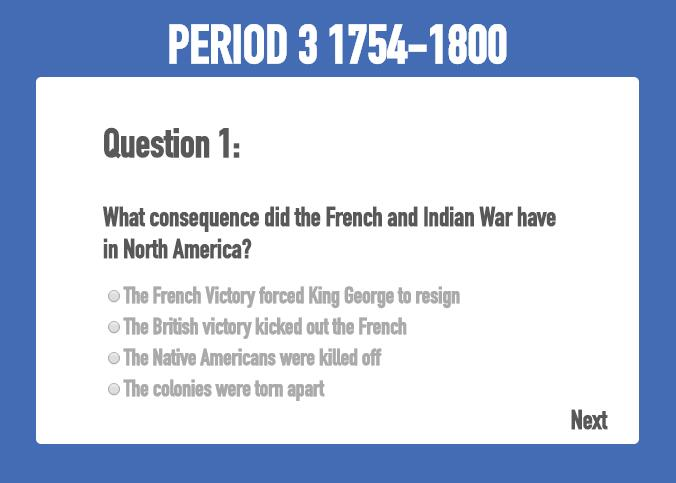

Capstone
forus.info
A work in collaboration with Solange Nhan
forUS is a site designed to help teach high school students about U.S. History in an interesting way. We understand how dry history can be when teachers drone on and on about policies and dates. Our job is simple. We want to help you understand and remember the basics of U.S. History and any other important factors that come along. We hope forUS will help you enjoy and learn history better than before.
Features
We implemented several features, including fade-in maps, timelines, and quizzes, into forUS to make the learning process more interactive.
